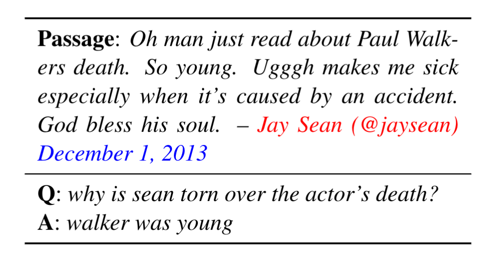
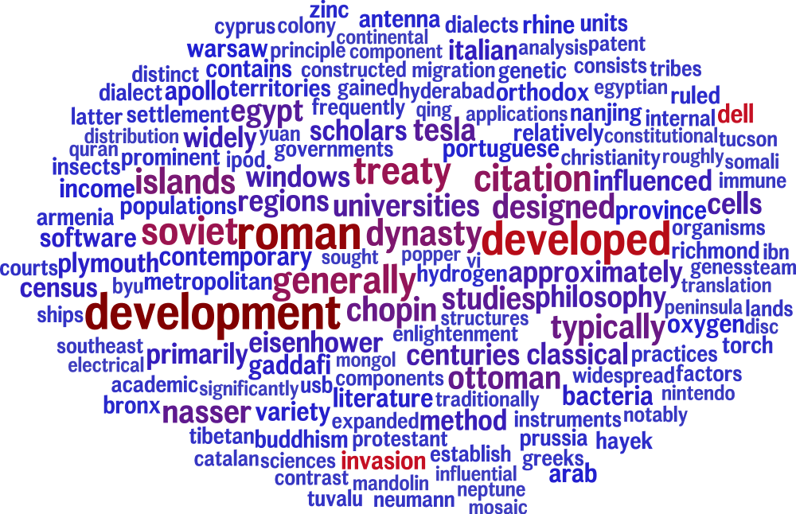

What is TweetQA?
With social media becoming increasingly popular on which lots of news and real-time events are reported, developing automated question answering systems is critical to the effectiveness of many applications that rely on real-time knowledge. While previous question answering (QA) datasets have concentrated on formal text like news and Wikipedia, we present the first large-scale dataset for QA over social media data. To make the tweets are meaningful and contain interesting information, we gather tweets used by journalists to write news articles. We then ask human annotators to write questions and answers upon these tweets. Unlike other QA datasets like SQuAD in which the answers are extractive, we allow the answers to be abstractive. The task requires model to read a short tweet and a question and outputs a text phrase (does not need to be in the tweet) as the answer.
TweetQA Paper (Xiong et al. ACL '19)
TweetQA Example

Comparison


Getting Started
We've built a few resources to help you get started with the dataset.
Download a copy of the dataset (distributed under the CC BY-SA 4.0 license):
To evaluate your models on our official testing dataset, please check our codalab competition site:
CodaLab SubmissionCitations
Please cite our paper as below if you use the TweetQA dataset.
@inproceedings{xiong2019tweetqa,
title={TweetQA: A Social Media Focused Question Answering Dataset},
author={Xiong, Wenhan and Wu, Jiawei and Wang, Hong and Kulkarni, Vivek and Yu, Mo and Guo, Xiaoxiao and Chang, Shiyu and Wang, William Yang},
booktitle={Proceedings of the 57th Annual Meeting of the Association for Computational Linguistics},
year={2019}
}Have Questions?
For dataset issues, email to xwhan@cs.ucsb.edu.
For submission issues, please email Hong Wang at hongwang600@cs.ucsb.edu.
Leaderboard
| Rank | Model | BLEU-1 | METEOR | ROUGE-L |
|---|---|---|---|---|
| EXTRACT-Upperbound | 75.1 | 69.8 | 75.6 | |
| Human Performance | 70.0 | 66.7 | 73.5 | |
|
1 June 02, 2021 |
ST-F-MTL SUDA NLP |
76.84 | 73.30 | 77.97 |
|
2 Oct 28, 2019 |
NUT-RC SUDA NLP |
76.1 | 72.2 | 77.8 |
|
3 Oct 07, 2019 |
xlnet PingAnLifeInsuranceAI |
73.3 | 70.0 | 75.0 |
|
4 Oct 11, 2019 |
xlnet Jiayun Lin |
72.8 | 69.8 | 74.5 |
|
5 Oct 16, 2019 |
TKR(single model) Anonymous |
69.0 | 65.6 | 71.2 |
|
6 Oct 27, 2019 |
bert(single model) FastNet |
66.2 | 63.2 | 68.1 |
|
7 July 01, 2019 |
BERT Base Baseline |
61.4 | 58.6 | 64.1 |
|
8 July 01, 2019 |
Generative Baseline |
36.1 | 31.8 | 39.0 |
|
9 July 01, 2019 |
BiDAF Baseline |
34.9 | 31.4 | 38.6 |
|
10 July 01, 2019 |
Query-Matching Baseline |
11.2 | 12.1 | 17.4 |